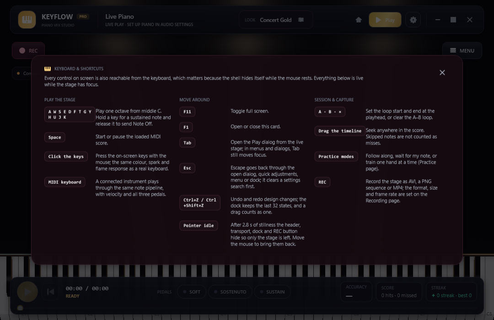

Camera & FX
Put yourself on the stage — and let it know where your hands are
Draw a live webcam or a looping video file onto the stage in any corner, key out a green backdrop, and turn on hand tracking: Keyflow reads your hands straight out of the camera frame with classical computer vision — no model, no download, nothing leaves your machine.

Webcam overlay
A camera window on the stage, keyed if you want it
- Camera overlay draws a live camera or a looping video file onto the stage as a small window. Pick a camera from the list your machine has (REFRESH CAMERAS re-reads it), or USE CAMERA / CHOOSE VIDEO… to change the source.
- Corner places it in any of the four corners, Size sets 15–60% of the stage width, and Opacity and Mirror do what they say.
- Key tolerance goes from 0 (key off) to 100 (widest) and removes pure green — exactly the colour of the Green Screen preset — so the backdrop disappears and the player stays.
- The status line under the rows says plainly which camera is open, which file is playing, or why it cannot run: no camera on this machine, or no Media Foundation.
- Frames are read with Media Foundation on a thread of their own and reach the stage at 30 fps, so the camera never blocks drawing.

Hand tracking
Which key is your hand over? The stage knows
- Hand tracking reads your hand out of the camera frame itself: skin pixels are found by colour (YCbCr) and the largest group of neighbouring skin cells is taken as the hand. No model, no download, no network.
- It counts the fingers you raise and marks the key your hand is over with a light bar on that key, a position dot, and one dot per finger.
- The camera stays open for this layer even when the camera picture itself is hidden — so you can have the markers without your face on the stage.
- Skin sensitivity is a slider, and the status line reports the finger count, the key and the percentage of the frame your hand fills.

A recipe
The “player cut out of the background” look
- Film against greenUse a green backdrop behind you; the key tolerance removes exactly that green.
- Or key the stage insteadChoose the Green Screen preset and composite the whole stage over your own footage in OBS.
- Place and size itCorner, Size and Opacity put the camera window where your composition wants it.
- Markers without your faceHide the camera picture and leave hand tracking on for the key markers alone.
Camera & FX page
Everything on one page of the dock
| Card | Controls |
|---|---|
| Camera & FX | Parallax, zoom, frame, saturation, contrast and bloom for the stage itself. |
| WEBCAM OVERLAY | Camera overlay switch, camera list with REFRESH CAMERAS, USE CAMERA / CHOOSE VIDEO…, Corner, Size, Opacity, Mirror, Key tolerance and a status line. |
| HAND TRACKING | Hand tracking switch, Skin sensitivity, and a status line with the finger count, the key and the share of the frame the hand fills. |
Honest about what classical vision can do
Hand tracking is classical computer vision, not a machine-learning model. With two hands in view, or a backdrop close to skin colour, only the biggest hand is followed; the finger count is only trustworthy when the hand is large enough in the frame; and it wants a simple, reasonably lit background.
There is no 3D perspective camera either: the stage is a flat piano roll with slight parallax. Nothing is uploaded — frames are read locally, drawn locally and never leave the machine.
One camera, one cable, one stage
The overlay and hand tracking are in the same free download as everything else.